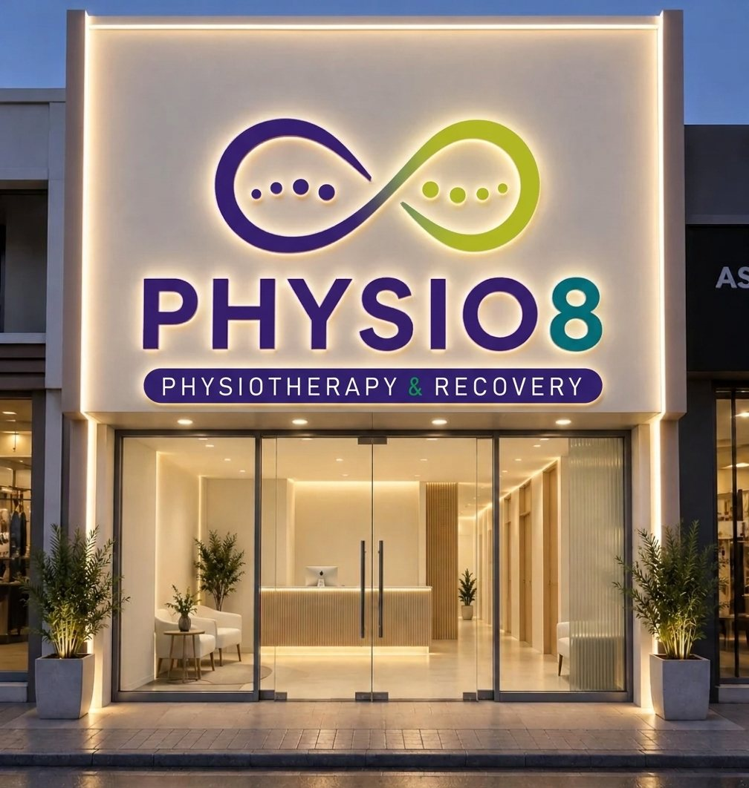
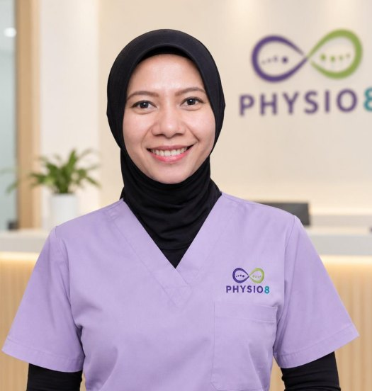

Fisioterapi olahragaParamount Gading Serpong
Recover.Move.Repeat. Fisioterapi untuk cedera olahraga di Gading Serpong, dari lapangan padel dan tenis hingga lintasan lari dan jalur bersepeda.
Bahu nyeri setiap smash? Lutut sakit saat berlari? Temukan penyebabnya bersama fisioterapis kami, lalu jalani program yang disusun khusus untukmu hingga siap kembali bermain.
- Satu terapis untuk satu pasien
- Gerakmu diukur dengan kamera AR
- Dipimpin fisioterapis berpengalaman 18 tahun

Mengapa Physio8
Mengapa memilih Physio8?
Tiga hal yang membedakan perawatan kami, dari kunjungan pertama hingga kamu kembali beraktivitas.
Physio8 Pathway
Delapan tahap pemulihan yang disusun oleh praktisi berpengalaman 18 tahun dan mengacu pada standar internasional.
Pelajari selengkapnya02Pengukuran sejak awal
Postur, rentang gerak, dan pola gerakmu diukur dengan kamera AR pada kunjungan pertama, lalu diukur ulang untuk melihat perkembanganmu.
Pelajari selengkapnya03Clinical Pilates
Setelah nyeri berkurang, kekuatan dan kontrol gerakmu dibangun dengan Pilates yang dipandu fisioterapis.
Pelajari selengkapnyaIngin tahu apakah Physio8 cocok untuk keluhanmu?
Tanyakan via WhatsApp01 · Physio8 Pathway
Dari cedera sampai kembali ke lapangan
Delapan tahap yang jelas, dari pemeriksaan pertama hingga kamu siap kembali bermain. Disusun oleh praktisi berpengalaman 18 tahun dan mengacu pada pedoman KNGF serta riset University of Melbourne. Dua tahap pertama dilakukan di klinik; selanjutnya, sesi terapi di klinik dipadukan dengan latihan di rumah yang kami pantau.
- 01
Assess
Pemeriksaan klinis dan pengukuran gerak dengan kamera.
- 02
Diagnose
Penjelasan masalah, rencana terapi, dan perkiraan biaya.
- 03
Relieve
Nyeri diturunkan terlebih dahulu hingga mencapai target yang disepakati.
- 04
Rebuild
Rentang gerak dan kekuatan dasar dibangun kembali.
- 05
Strengthen
Latihan beban dan clinical Pilates.
- 06
Retrain
Latihan gerakan khas olahragamu, lalu tes ulang.
- 07
Return
Tes kesiapan sebelum kamu kembali bermain.
- 08
Maintain
Latihan rutin dan pemeriksaan berkala agar kondisimu tetap terjaga.
Kamu melanjutkan ke tahap berikutnya setelah target tahap sebelumnya tercapai. Pada tahap 6 dan 8, kami melakukan pengukuran ulang dan membandingkannya dengan hasil hari pertama.
Pelajari selengkapnyaIngin tahu programmu akan seperti apa?
Konsultasi via WhatsAppTim kami
Mengenal fisioterapis kami

Lead Physiotherapist
Ika Setia Ningsih, S.Ft
Sejak 2008
Ika sudah 18 tahun menangani pasien di berbagai klinik di Jakarta, termasuk sebagai senior physiotherapist, dan pernah mengajar di program studi fisioterapi Universitas Esa Unggul. Di Physio8, Ika memimpin tim klinis dan memastikan setiap rencana terapi mengikuti standar yang sama.
- 18+ tahun praktik klinis, sejak 2008
- Sertifikasi dry needling, Australian Physiotherapy Association
- Sertifikasi Mulligan Concept
- Sarjana Fisioterapi
- Pernah mengajar di program studi fisioterapi Universitas Esa Unggul
- Pelatihan podiatri dan dasar women's health
Protokol dan pelatihan tim mengacu pada pedoman KNGF (asosiasi fisioterapi Belanda) dan riset University of Melbourne.
Ingin berkonsultasi langsung dengan fisioterapis kami?
Konsultasi via WhatsApp02 · Pengukuran sejak awal
Kenali kondisimu sebelum terapi
Kunjungan pertama dimulai dengan pengukuran. Postur dan gerakmu direkam dengan kamera AR, lalu rentang gerakmu diukur. Pengukuran yang sama kami ulangi di tengah dan akhir program, sehingga kamu dapat melihat sendiri perkembangannya.
- 1Scan
- 2Check
- 3Plan
- 4Re-scan
Postur dari empat sisi
Kamera AR merekam posturmu dari depan, kanan, belakang, dan kiri.
Rentang gerak
Seberapa jauh leher, punggung, dan bahumu bisa bergerak, diukur dengan kamera dan giroskop.
Squat screen
Gerakan jongkok memperlihatkan kondisi pinggul, lutut, dan pergelangan kakimu.
Semua hasil pengukuran ini tetap dibaca fisioterapis bersama hasil pemeriksaan klinis.
Siap mengetahui kondisimu?
Jadwalkan pengukuran awal
03 · Clinical Pilates
Bangun kekuatan dengan clinical Pilates
- 01
Nyeri hilang belum berarti pulih
Setelah nyeri turun, otot di sekitar area cedera biasanya masih lemah. Jika langsung kembali bermain, cedera yang sama sering kambuh.
- 02
Didukung riset
Tinjauan Cochrane menemukan Pilates membantu mengurangi nyeri punggung bawah kronis dibanding intervensi minimal (Yamato, 2015). Latihan yang disertai edukasi juga menurunkan risiko nyeri punggung bawah kambuh (Steffens, 2016).
- 03
Disesuaikan dengan kondisimu
Dipandu fisioterapis yang memegang hasil pengukuranmu, bebannya dinaikkan secara bertahap, lalu dievaluasi ulang pada tahap 6 dan 8.
Ingin mencoba clinical Pilates?
Tanyakan via WhatsAppYang kami tangani
Temukan solusi untuk keluhanmu
Nyeri yang tidak kunjung hilang, pemulihan setelah operasi, atau ingin tetap kuat di usia lanjut? Kami menangani berbagai keluhan otot, sendi, dan gerak, dengan fokus khusus pada cedera olahraga.
Cedera olahraga
Untuk pemain padel dan tenis, pelari, pesepeda, dan pemain futsal. Bahu nyeri saat smash, tennis elbow, runner's knee, hamstring tertarik, hingga keseleo pergelangan kaki.
Lihat panduan cederaNyeri punggung & leher
Pinggang dan leher pegal karena duduk lama, bekerja di depan layar, atau salah posisi saat mengangkat beban.
Baca selengkapnyaNyeri sendi
Bahu, lutut, pinggul, atau pergelangan yang nyeri dan kaku, terutama yang tidak membaik setelah beberapa hari.
Baca selengkapnyaPemulihan pasca operasi
Program setelah operasi ACL, bahu, atau sendi lainnya, dari mengembalikan gerak hingga lolos tes untuk kembali beraktivitas.
Baca selengkapnyaPenguatan untuk orang tua
Latihan kekuatan dan keseimbangan agar orang tua tetap mandiri, lebih stabil saat berjalan, dan percaya diri bergerak.
Konsultasi via WhatsAppPostur & pola gerak
Bahu tidak sejajar, postur membungkuk, atau gerakan yang terasa tidak seimbang. Kami ukur dari empat sisi dengan kamera AR.
Baca selengkapnyaNyeri yang sering kambuh
Cedera yang sama terulang setiap kali kembali aktif. Biasanya kekuatan dan kontrol geraknya belum pulih sepenuhnya.
Pelajari clinical PilatesKeluhanmu tidak ada di daftar?
Ceritakan via WhatsAppLayanan
Pilih layanan yang tepat untukmu
Butuh informasi harga? Hubungi kami melalui WhatsApp. Setelah pemeriksaan pertama, perkiraan jumlah sesi dan total biayanya kami tuliskan di rencana terapimu.
Movement & Posture Assessment
Pemeriksaan pertama: wawancara, pengukuran gerak dengan kamera, dan pemeriksaan klinis.
Fisioterapi
Sesi satu terapis untuk satu pasien, dengan fisioterapis atau fisioterapis senior. Bisa per sesi atau paket 4 dan 8 sesi.
Clinical Pilates
Pilates yang dipandu fisioterapis, bagian dari tahap 5 sampai 8.
Leg Compression
Terapi kompresi pada kaki untuk membantu kaki terasa lebih ringan setelah berolahraga atau beraktivitas lama.
Kinesio Taping
Taping untuk menopang otot atau sendi agar kamu tetap dapat beraktivitas.
Ingin tahu harga, paket, dan jadwal yang tersedia?
Tanyakan via WhatsAppUlasan pasien
Apa kata pasien kami
Ulasan asli dari Google, kami tampilkan apa adanya tanpa disunting.
Baca semua ulasan di GoogleKaki area ankle agak sakit akhirnya mutusin utk fisio di Physio8. Surprisingly hbs difisio lgs enakan, tdnya bt lari msh sakit. Msh bth beberapa kali treatment, but this place recommended bgt bt yg sering olahraga dan bth treatment after exercise.
Excellent service, keluhan pundak yg ketarik di terapi pertama langsung kerasa recoverynya. Very recommended!
Suka banget fisio di sini, therapistnya profesional dan ruang treatmentnya juga bersih dan nyaman. Will come back again
nice and cozy place with best physiotherapist. 10/10 will recommened to a friends
Punya keluhan serupa?
Tanyakan via WhatsAppLokasi
Kunjungi klinik kami
Temukan kami di deretan Ruko Hudson, Paramount Gading Serpong.
Paramount Gading Serpong
Medang, Pagedangan
Kabupaten Tangerang, Banten 15334
- MobilGerbang tol West BSD 1: 4,8 km · Legok: 6,1 km
- KeretaKRL ke Stasiun Rawa Buntu, 7,6 km
- SekitarUMN 1,6 km · Summarecon Mall Serpong 3,2 km
Artikel
Tips dan panduan seputar cedera
Ditulis oleh fisioterapis kami, lengkap dengan rujukan jurnal. Mulai dari cedera bahu pemain padel hingga kapan nyeri perlu diperiksa.

Nyeri bahu pemain padel: rotator cuff, bukan "salah urat"
Smash berulang membebani otot rotator cuff pada rentang yang sama setiap kali. Tes mandiri sederhana dan program penguatan 8 minggu.
Baca selengkapnya
Runner's knee, shin splints, Achilles: membedakan tiga nyeri lari
Lokasi nyeri, waktu munculnya, dan respons terhadap tempo memberi tahu kita tiga hal berbeda. Plus kesalahan progresi mingguan yang paling sering.
Baca selengkapnya
Timeline realistis rehabilitasi pasca operasi ACL
Sembilan sampai dua belas bulan, bukan tiga. Kriteria kelulusan per fase — dan mengapa tes hop menentukan kapan kamu boleh kembali bermain.
Baca selengkapnya
Nyeri dua hari setelah olahraga weekend: normal atau cedera?
DOMS terasa merata dan membaik dengan gerak. Cedera terasa terlokalisasi dan memburuk dengan beban. Cara membedakannya di rumah.
Baca selengkapnyaPunya pertanyaan setelah membaca?
Tanyakan ke fisioterapisFAQ
Pertanyaan yang sering muncul
Belum menemukan jawabannya? Hubungi kami melalui WhatsApp, fisioterapis kami siap membantu.
Apakah saya perlu surat rujukan dokter?
Tidak. Kamu dapat langsung datang ke fisioterapis (Permenkes No. 65 Tahun 2015 tentang Standar Pelayanan Fisioterapi). Jika hasil pemeriksaan kami menunjukkan kondisi yang perlu diperiksa dokter, misalnya memerlukan rontgen atau MRI, kami akan merujukmu ke dokter spesialis dan menjelaskan alasannya.
Saya bukan atlet. Boleh datang?
Tentu. Fokus kami memang cedera olahraga, namun kami juga menangani nyeri punggung, leher kaku akibat bekerja, dan pemulihan setelah operasi.
Apa yang terjadi di kunjungan pertama?
Kami menanyakan keluhan dan olahragamu, memeriksa tanda bahaya, merekam postur dan gerakmu dengan kamera, lalu melakukan pemeriksaan klinis. Di akhir kunjungan, kamu akan mengetahui masalahnya, rencana terapi, dan perkiraan biayanya.
Berapa biayanya?
Informasi harga terbaru dapat ditanyakan langsung melalui WhatsApp. Pembayaran dapat dilakukan per sesi atau dengan paket 4 atau 8 sesi.
Apa bedanya clinical Pilates dengan kelas Pilates biasa?
Clinical Pilates dipandu fisioterapis yang memahami kondisi dan hasil pengukuranmu. Latihannya dipilih sesuai tahap pemulihan dan bebannya dinaikkan secara bertahap. Clinical Pilates merupakan bagian dari terapi, bukan kelas umum.
Bagaimana cara membuat jadwal?
Hubungi kami melalui WhatsApp di +62 815-1148-8080. Pengingat jadwal dan latihan rumahmu juga kami kirim melalui WhatsApp.
Di mana lokasi Physio8?
Ruko Hudson Blok B No. 29, Paramount Gading Serpong, Medang, Pagedangan, Kabupaten Tangerang, Banten 15334. Sekitar 4,8 km dari gerbang tol West BSD 1.
Masih ada pertanyaan?
Tanyakan via WhatsAppJadwalkan kunjungan
Siap kembali bergerak?
Ceritakan keluhanmu melalui WhatsApp: cedera yang kamu alami, sejak kapan, dan olahraga yang kamu tekuni. Kami bantu atur jadwal kunjungan pertamamu.